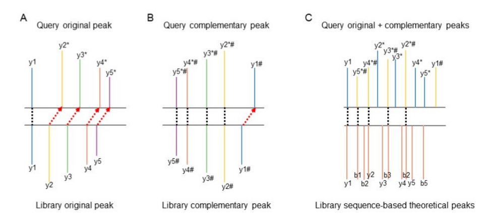
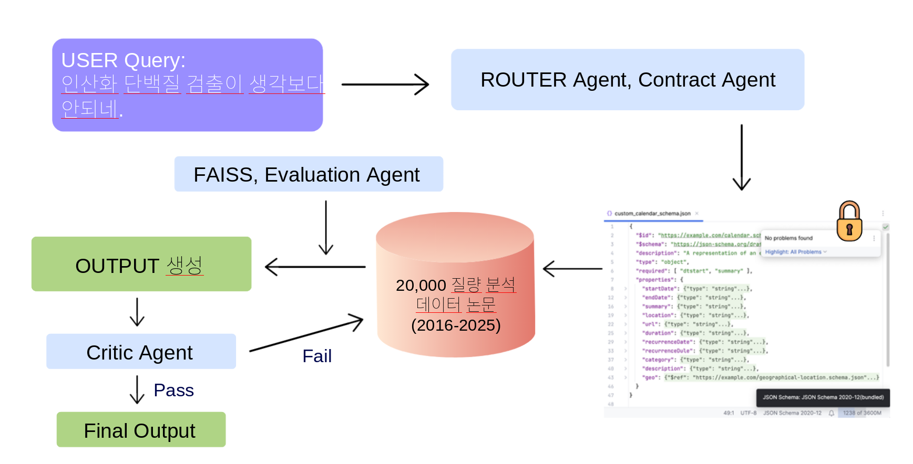
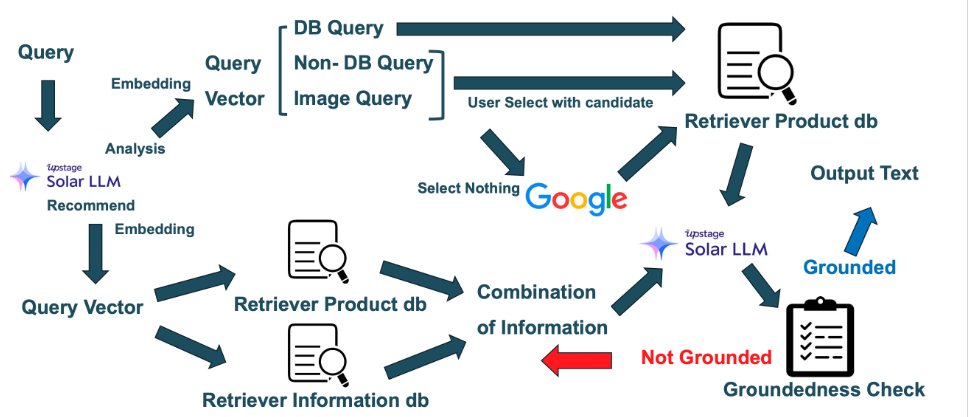

Hello, I'm Younghee Seo
AI & Bioinformatics Engineer
Python Programmer | LLM Application Engineer | AI Researcher

Python Programmer | LLM Application Engineer | AI Researcher
Data Scientist, Specializing in AI & machine learning.
Researching proteome analysis algorithms.
Python, Lab Automation, and LLM Application.
컴퓨터비전 A+, 딥러닝기초 A0, 단백체정보학 A+, 기계학습 A+, 인공지능논문연구 A+
Microsoft Azure AI900, DP900
선형대수학 A+, 확률과통계 A+, 인공지능 A0, 알고리즘분석 A+
연구원
연구원
인턴
Post-translational Modification-Aware Open Modification Search via Dual Embedding & Parallel Indexing


탠덤 질량 분석(MS/MS) 기반 단백체학에서 '개방형 탐색(OMS)'은 사전 정의되지 않은 번역 후 수식화(PTM)를 광범위하게 식별하는 핵심 기술입니다. 기존의 대표적인 고속 탐색 알고리즘인 ANN-SoLo는 군집화를 통해 연산 효율을 높였으나, 수식화로 인해 발생하는 조각 이온의 질량 이동(Mass shift)을 후보 검색 단계에서 제대로 반영하지 못해 정답 스펙트럼을 다수 놓치는 치명적인 한계가 있었습니다.
이를 해결하기 위해, 수식화에 따른 스펙트럼 왜곡을 보정하는 'POMS' 프레임워크를 개발했습니다. 핵심은 상보적 이온 위치를 이론적으로 계산하는 '보완 스펙트럼(Complementary Spectrum)' 기법과 '서열 기반 이론적 이온 특징'을 결합한 이중 임베딩입니다.
단백질 수식화 위치(N-말단, 중간, C-말단)에 따라 스펙트럼 왜곡 양상이 다름을 파악하고, 원본, 고질량 페널티, 보완, 페널티-보완 등 4가지의 다중 표현(Multi-representation) 데이터베이스를 병렬로 탐색하도록 파이프라인을 구축했습니다.
논문 투고 완료 (2026.06.24, 리뷰 중)
국제 질량분석학회 포스터 발표
한국단백체학회 포스터상 (Poster Award)







Interested in collaboration or have a question? Feel free to reach out!